Управленческая консолидация холдинга за четыре дня
Пять фирм, семь баз 1С, один отчёт. ИИ-агент построил для холдинга систему, которая сама собирает данные из бухгалтерий, зарплаты и казначейства и показывает по каждому заказчику доход и расход: по учёту и по деньгам, помесячно, с расшифровкой любой цифры до документа. Работу вели два инструмента. MCP:RSV Data Pro отвечал за данные: изучил живые базы, завёл все настройки и сопоставления между ними, сверил итог. MCP:RSV Server отвечал за разработку и её проверку в работающей программе. Обычно такую задачу решают внедрением «1С:Управление холдингом», и занимает оно полгода.
Клиент не раскрывается: отрасль, названия и суммы изменены или опущены. Все снимки ниже сделаны в работающей программе на демонстрационных данных с вымышленными фирмами и заказчиками. Сроки, порядок работы, состав проверок и их результаты — как было.
Задача
Холдинг из нескольких фирм работает с корпоративными заказчиками по долгосрочным договорам. У каждой фирмы свои заказчики, у заказчика — несколько объектов. Руководителю нужен ответ на простой вопрос: сколько мы зарабатываем на каждом заказчике.
Финансовый руководитель вела в Excel «Расчёт затрат» по одной фирме: выручка, деньги от заказчика, зарплата с налогами, прямые расходы, офис, доход. Цифры она переписывала руками из трёх разных баз 1С. Остальные фирмы оставались без такого расчёта: на них не хватало времени.
Разбор таблицы показал то, что бывает почти в каждой ручной таблице:
- в разных месяцах разные формулы: в одном вычтены все расходы, в другом только зарплата;
- один месяц посчитан без НДС, два других с НДС, и прибыль в них завышена примерно на 18 % выручки;
- есть опечатки при переносе цифр и пропущенные платежи.
Данные при этом лежали в учёте полностью. Не хватало системы, которая сведёт их по единым правилам.
| База | Конфигурация | Сколько |
|---|---|---|
| Бухгалтерия каждой фирмы | 1С:Бухгалтерия предприятия 3.0 КОРП | 5 |
| Зарплата всех фирм | 1С:Зарплата и управление персоналом 3.1 | 1 |
| Казначейство, заявки, банк | 1С:Комплексная автоматизация 2.5 | 1 |
Типовые базы, у каждой фирмы своя. Бухгалтерия вела затраты по номенклатурным группам «заказчик + объект», зарплата — по участкам, в банке были спецсчета по договорам. Эти привязки и стали ключами, по которым система связывает три базы с одним заказчиком.
Два инструмента, один цикл
Ни один из двух MCP-серверов не справился бы без другого. Каждая часть работы проходила один и тот же цикл:
| Шаг | Что делается | Чем |
|---|---|---|
| 1. Изучить реальные данные | где в каждой базе лежит нужная цифра, по какому полю связаны базы, заполнено ли оно в жизни, а не по документации | Data Pro |
| 2. Сделать разработку | расширения, сервисы, справочники, регистр, отчёт, права, тесты | Server |
| 3. Завести данные и настройки | заказчики, объекты, сопоставления между базами, правила, пользователи | Data Pro |
| 4. Проверить | тесты и сценарии в работающей программе; сверка с источниками до копейки | Server + Data Pro |
MCP:RSV Data Pro — изучить, завести, сверить
Сначала изучить, потом писать код. Агент начал с разведки рабочих баз, только чтение. За 45 минут он нашёл, откуда берётся каждая строка таблицы руководителя, вплоть до документа. Попутно выяснилось главное для всей разработки: в бухгалтерии заказчик «живёт» в номенклатурной группе, в ЗУП — в участке, в банке — в спецсчёте и направлении деятельности. Без этого знания техническое задание было бы написано вслепую, а разработка переделывалась бы после первого запуска. Каждую следующую гипотезу («эта статья входит в прямые затраты?», «этот договор — того же заказчика?») агент проверял запросом за секунды, а не вопросом бухгалтеру.
Самое трудоёмкое — завести данные. Чтобы платёж, проводка и начисление зарплаты сошлись на одном заказчике, система должна знать, как этот заказчик называется в каждой из семи баз. Это и есть сопоставление, и именно оно в классических проектах растягивается на месяцы: консультант сидит с бухгалтером и выписывает соответствия в таблицу, программист переносит. Здесь всё заведено через Data Pro:
| Что заведено в рабочей базе | Сколько |
|---|---|
| Заказчики и объекты, включая «общие расходы» каждой фирмы | два десятка заказчиков, три десятка объектов |
| Ключи сопоставления: номенклатурные группы, договоры, участки ЗУП с их идентификаторами в базе-источнике | больше сотни |
| Договоры, спецсчета банка, направления деятельности, привязанные к объектам | десятки |
| Правила разнесения платежей, строки отчёта, источники данных | несколько десятков |
| Служебные пользователи с правами только на чтение в базах-источниках | 6 баз |
| Загруженные строки данных из бухгалтерий и ЗУП | больше полутора тысяч |
Каждый ключ агент брал не из головы, а запросом к базе-источнику: находил номенклатурную группу, договор или участок, проверял по суммам, что это тот самый, и записывал идентификатор. Всё, что меняет данные, шло в два шага: репетиция с откатом, затем подтверждённая запись. Новая фирма подключалась целиком — изучить её бухгалтерию, завести заказчиков и ключи, загрузить, сверить — за 20–35 минут.
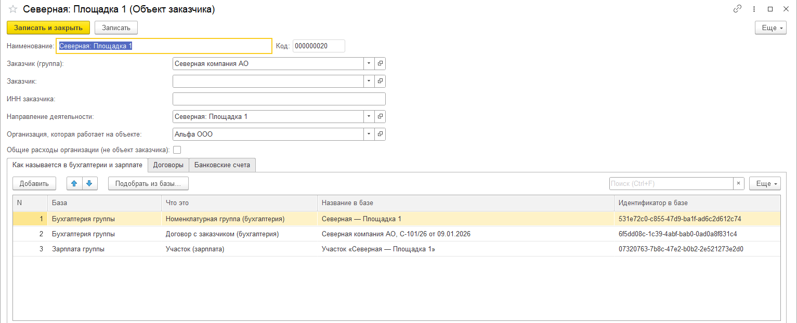
Сверить — независимым путём. Ожидаемые числа для модульных тестов Data Pro считал своим запросом, а не тем кодом, который проверяется. После каждой загрузки он сверял результат с источником до копейки: выручку — с реализациями, зарплату — с ЗУП, поступления — с банком. Если расходилось, разбирался, почему (документ провели позже, платёж пришёл после сверки), и записывал объяснение.
И дальше, в работе. Вопрос руководителя «почему этот платёж не у заказчика» закрывается за минуты: агент находит документ, видит, какого ключа не хватает, и дозаводит его.
MCP:RSV Server — разработка и проверка в работающей программе
Метаданные, код, формы, права, HTTP-сервисы, модульные тесты YAxUnit, сценарии Vanessa Automation со снимками работающей программы, код-ревью, сборка файлов расширений. Работа велась в трёх проектах 1C:EDT — казначейство, бухгалтерия и зарплата. Изменений в обход среды разработки нет.
Скилл и правила для агента
Скилл «автоматизированная разработка» из комплекта MCP:RSV Server: изучить, сделать, проверить в программе — и только потом брать следующее.
Оркестратор и исполнители
Ведущий агент разбил задачу на части и раздавал их исполнителям, независимые — параллельно. Каждую часть принимал своей проверкой: сам смотрел снимки, сверял запросом. 2 разведки и 16 частей.
Модель
Claude Opus 5.5.
Как шла работа
| Когда | Что |
|---|---|
| День 1, 15:36 | Владелец присылает два снимка листа Excel. Файла нет, только картинка |
| 16:30 | Разведка живых баз закончена: найден источник каждой строки. Написано техническое задание |
| 17:00 | Владелец отвечает на три вопроса, без которых нельзя начинать: «как ты предлагаешь» |
| 17:45–20:55 | Три исполнителя параллельно: сервис в бухгалтерии, сервис в ЗУП, приёмник в казначействе |
| 22:55 | Первая рабочая версия отчёта в тестовой базе, с тестами и снимками |
| Ночь | Владелец ставит расширения в рабочие базы |
| День 2, 05:08 | Первая загрузка из рабочих баз; все контрольные цифры совпали с бухгалтерией |
| 06:10 | Отчёт работает по первой фирме |
| День 3, 19:30–20:45 | Подключены ещё четыре фирмы, по 20–35 минут на каждую |
| 21:30 | Полная проверка пяти фирм в рабочей базе: контрольные цифры совпали, итог холдинга равен сумме фирм |
| День 4 | Крупнейшая фирма загружена с начала года. Доработка по просьбе руководителя: несколько статей косвенных расходов делятся по выручке |
В техническом задании разработка была оценена в 4–6 рабочих дней программиста. Фактически она заняла около 5,5 часа.
Что получилось
Отчёт «Экономика заказчиков»
Для руководителя — одна команда в разделе «Казначейство». Выбрать фирму или все сразу, заказчика и период. Без настроек отчёта и выгрузок. Сверху — свод по всем заказчикам, ниже — помесячная таблица.
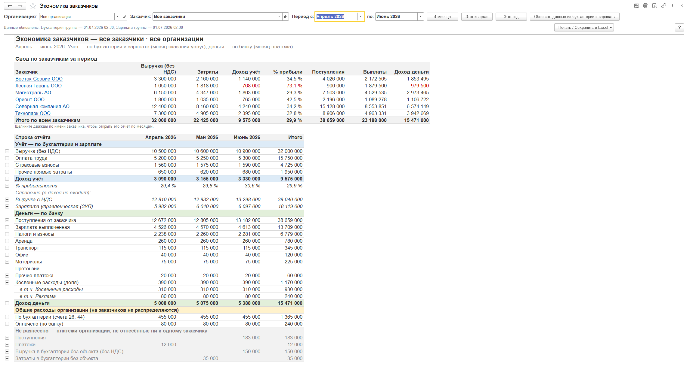
По каждому заказчику и объекту, помесячно:
- Учёт. Выручка без НДС, оплата труда, страховые взносы, прочие прямые затраты, доход и рентабельность.
- Деньги. Поступления от заказчика, выплаченная зарплата, налоги, прямые расходы по объекту, офис, прочее и доля косвенных расходов фирмы — аренда, банк, связь, реклама. Доля делится между заказчиками пропорционально выручке месяца, до копейки, и видна по каждой статье отдельно («в т.ч.»).
- Отдельно — общие расходы фирмы и то, что не удалось отнести ни к одному заказчику, чтобы ничего не терялось.
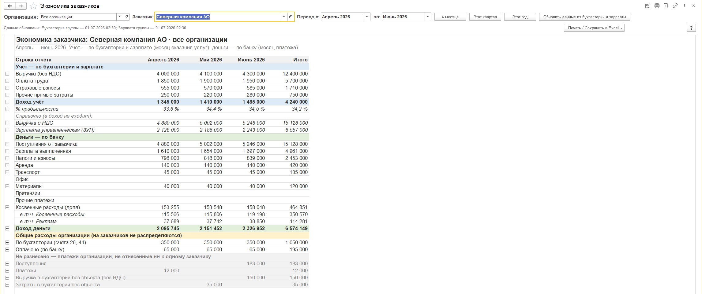
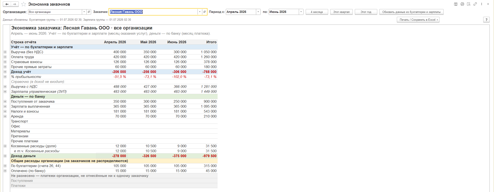
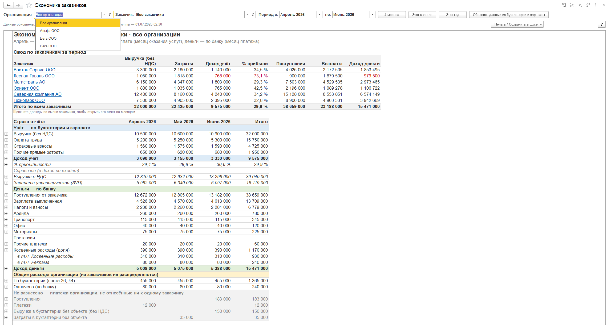
Любая цифра — до документа
Двойной щелчок по сумме открывает список документов, из которых она сложилась, оттуда — сам документ. Для косвенных расходов видно, какой платёж, какая доля и почему.
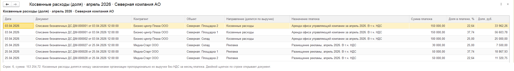
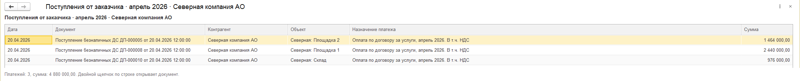
Настройки, на которых всё держится
Все эти справочники заполнял агент через MCP:RSV Data Pro — запросами к базам-источникам, с проверкой по суммам.
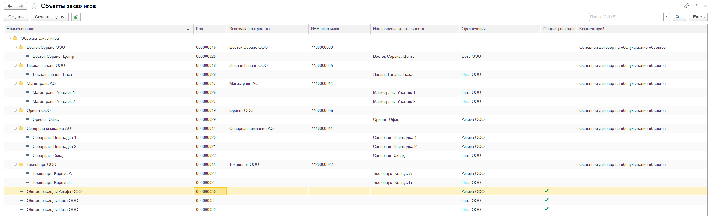
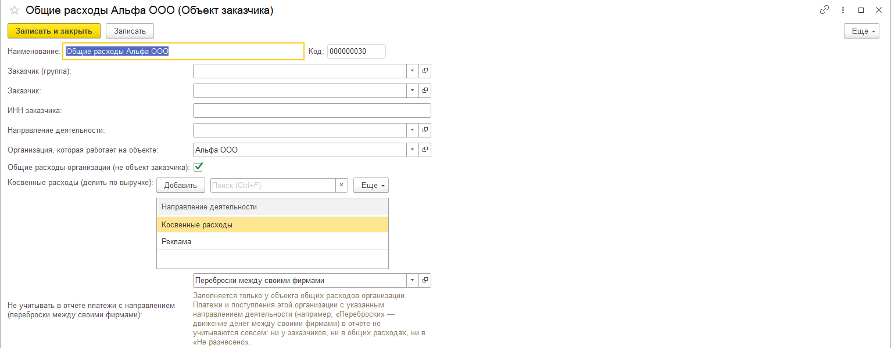
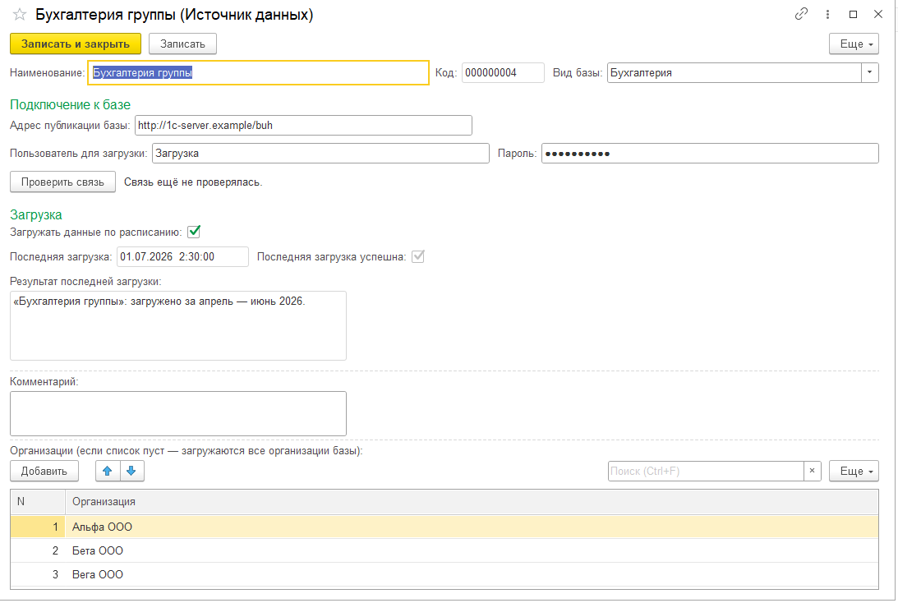
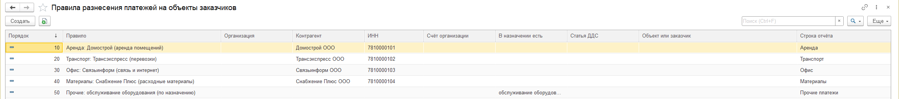
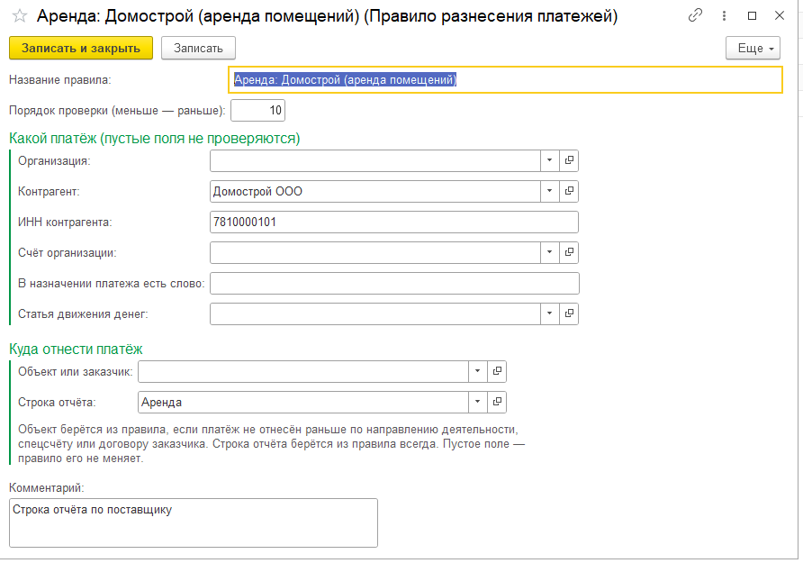
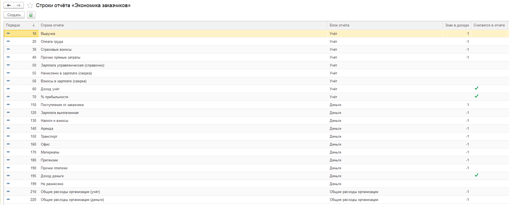
Как это устроено
В каждую бухгалтерию и в ЗУП поставлено небольшое расширение с HTTP-сервисом только на чтение — один и тот же файл во все пять бухгалтерий. Казначейство само забирает из них данные каждую ночь и по кнопке, раскладывает по заказчикам, а деньги считает в момент формирования отчёта прямо из банковских документов. Типовые конфигурации не изменены, всё сделано расширениями.
Что отчёт показал в первую же неделю: один из крупных заказчиков оказался убыточным, а долг по его оплатам заметно вырос — в ручной таблице этого не было видно, потому что эту фирму вручную вообще не считали; у нескольких заказчиков выручка есть, а оплат почти нет; почти половина «неразнесённых» денег — переводы между своими фирмами.
Как проверено
| Проверка | Результат |
|---|---|
| Модульные тесты YAxUnit | сервис бухгалтерии 29/29, сервис ЗУП 32/32, по механизмам отчёта — от 7 до 11 тестов на каждую часть |
| Сценарии Vanessa Automation | 15 сценариев в работающей программе; один — под пользователем-руководителем без прав администратора |
| Снимки работающей программы | 81, каждый просмотрен агентом |
| Сверка с источниками (Data Pro) | контрольные цифры всех пяти фирм совпали до копейки с бухгалтерией, ЗУП и банком |
| Внутренняя согласованность | итог по холдингу = сумма фирм: 900+ ячеек, 0 расхождений |
| Код-ревью и проверка проекта средой | новых ошибок нет; однотипные замечания разобраны и объяснены |
Что агент нашёл и исправил сам
Главное: у роли сервиса не было права на метод HTTP — в рабочих базах сервис не ответил бы ни на один запрос. Это выявил первый настоящий HTTP-вызов в тесте, до установки. Также найдены и исправлены субсчёт, на котором выпадала часть затрат, и адрес источника, который изнутри сервера не открывался, — и ещё семь мелочей.
Сравнение с классическим подходом
Сравнивали честно и брали вилки, а не крайние значения. Цены — официальный прайс 1С с 01.07.2026, прайсы партнёров, кейсы конкурса проектов 1С и тендеры ЕИС.
| Вариант | Лицензии | Работы | Срок |
|---|---|---|---|
| «1С:Управление холдингом», только консолидация по заказчикам и деньгам | 2,2–2,8 млн ₽ | 6–9 млн ₽ (вилка 4,6–13) | 5–9 месяцев, команда 3–5 человек |
| Заказная разработка у франчайзи (420–900 ч × 2 500–4 000 ₽) | не нужны | 1,5–2,5 млн ₽ (вилка 1,1–3,6) | 2–5 месяцев |
| BI-система поверх 1С | 0–1,5 млн ₽ в год | 0,5–2,5 млн ₽ | 2–4 месяца |
| ИИ-агент + MCP:RSV Server + MCP:RSV Data Pro | подписки ≈ 20 тыс. ₽ в месяц | ≈ 13 часов агента + несколько часов владельца | 3–4 дня |
Сколько стоил наш вариант. Три месячные подписки: MCP:RSV Server, тариф «Архитектор Про» — 7 900 ₽; MCP:RSV Data Pro — 3 900 ₽; подписка на ИИ-агента — около 100 $. Всего порядка 20 тыс. ₽ в месяц, а работа заняла 3–4 дня из месяца — остальное время те же подписки работали на другие задачи. На сам проект приходится около 3 тыс. ₽; для сравнения мы берём с запасом всю месячную сумму. Новых лицензий 1С не понадобилось.
- По сроку. Против ближайшего классического аналога — заказной разработки — в 20–40 раз быстрее (дни против месяцев); против внедрения «Управления холдингом» — примерно в 50 раз.
- По трудоёмкости. 420–900 часов программиста и аналитика против ≈ 13 часов работы агента и нескольких часов владельца — в 30–60 раз меньше.
- По деньгам. Даже за целый месяц подписок: против заказной разработки в 75–125 раз дешевле, против «Управления холдингом» в первый год — в 400–600 раз. Если считать только дни проекта — ещё в 7–8 раз больше.
Чего наш вариант не даёт
- «Управление холдингом» — типовая система с поддержкой вендора, документацией, МСФО, бюджетированием, формальной консолидацией с исключением внутригрупповых оборотов. Здесь построено ровно то, что было нужно: управленческая экономика по заказчикам и деньгам. Для этой задачи «Управление холдингом» избыточно; если нужно всё остальное — это другой разговор.
- Методику ИИ за людей не решает. Как делить косвенные расходы, какие выплаты считать оплатой труда, куда относить офис — решали владелец и руководитель. Агент готовил варианты с цифрами и рекомендацией, решение занимало у людей минуты, а не недели совещаний.
- Отчёт точен ровно настолько, насколько точен учёт. Где бухгалтерия ведёт затраты на два объекта одной строкой, отчёт относит их на крупного заказчика — погрешность не больше 4–6 %, и она явно названа. Переводы между своими фирмами пока помечаются вручную.
- Поддержку и развитие ведёт тот же агент. За четыре дня система выдержала пять доработок по ходу, каждая — с тестами и проверкой в программе.
Почему это стало возможно
Классический проект съедает время не на код. Время уходит на то, чтобы понять, где в каждой базе лежит нужная цифра, сопоставить справочники трёх систем, сверить результат с учётом и поймать расхождения — в оценке классического внедрения это 30–40 % трудоёмкости.
Здесь эту часть закрыл MCP:RSV Data Pro: агент видел живые данные всех семи баз, проверял каждую гипотезу запросом до написания кода, сам завёл сотню с лишним сопоставлений между базами и сверял результат с источником независимым путём. MCP:RSV Server дал полный цикл разработки в 1C:EDT с проверкой в работающей программе — поэтому «готово» здесь означает проверенное тестом, сценарием, снимком и сверкой.
Вместе они замыкают цикл: изучить данные → сделать → завести данные → проверить. Без Data Pro разработка шла бы вслепую, а настройку пришлось бы заводить руками. Без Server агент понимал бы данные, но не построил бы и не проверил систему. Скорость в десятки раз — именно оттого, что один агент проходит весь цикл сам, без передачи работы между аналитиком, программистом, консультантом и тестировщиком.
Источники для сравнения: цены 1С:Предприятие 8 в 2026 г. · «1С:Управление холдингом 8», бюджет внедрения · Кодерлайн, стоимость внедрения УХ · конкурс проектов 1С · ставки программистов 1С 2026 · статистика сроков ERP-проектов
Начать — с установки MCP:RSV Server (14 дней бесплатно), руководства и сайта MCP:RSV Data Pro.